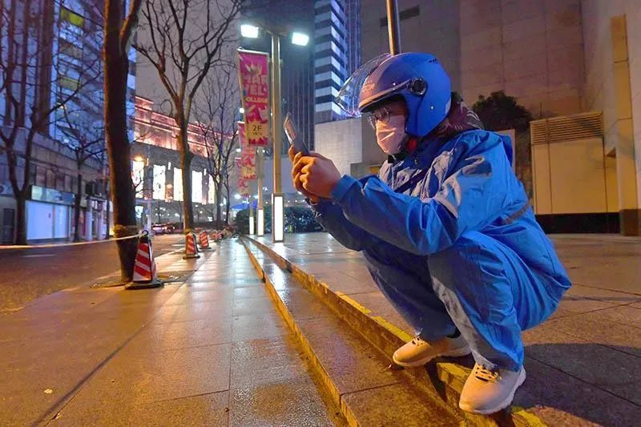
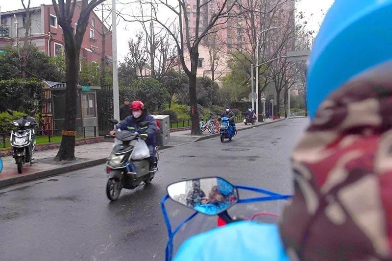

地球青年丨武汉的除夕夜，我一个人在家自行观察
原文链接 备份链接 以下文章来源于地球青年图鉴 ，作者地青 “此刻的中国版图中，武汉好像是一座孤城，但实际上在这座孤城之内还有无数个孤城，有成千上万个原驻家庭把自己锁在家里，他们表面上安静祥和，心头却有一根线紧绷着。”受访者张恒写道。 …

在疫情发展严重的春节期间，很多外卖员却没有离开岗位。除了不能回家过年，他们还要面对极大的被传染风险。在与疫情的战斗中，这些无名的外卖员也付出了很大的贡献。今天这篇文章就来自一位依然坚守岗位的外卖员，我们也想借此对这位作者，以及每一位在岗位上坚守的朋友说一句，辛苦了。

一个武汉外卖员的自述
撰文：潘多拉故事 照片作者：邢千里 照片来源：文汇
我是 2019 年 4 月份，到盒马超市配送部上班的。盒马的工资还可以，养家糊口够了。
十二月份网上曝出，华南海鲜市场的事儿，我第一时间就关注了，因为我喜欢看书，喜欢思考一些东西。我做过一些推测，但是当时也没有意识到有多严重，因为官方第一时间辟谣。后来虽然说有一些传染者，但是专家信誓旦旦地说，可防可控，不会人传人，所以没怎么在意。我周围的人估计连这个新闻看都不会看。

▲春节、疫情期间，依然坚守岗位的外卖员
元旦那天，长江边上还有灯光秀，很多人都去了，说什么也有上万人。
1 月 15 日我休息，我还到汉口的武汉天地以及物外书店到处转，拍了许多照片。当时街上基本没有带口罩的，现在回想起来真有点后怕。
真正引起我们配送部注意起来，是 1 月 21 日。当时工作群里面发通知，所有人必须带口罩上班，大家才开始知道这个事儿。当时我就推测事情恐怕已经很严重了。很多人还不带口罩，觉得病毒离自己还很远。到了第二天，情况又变了，从外面回来的工作人员要消毒洗手。到了第三天开始量体温。大家才意识到真的出问题了，但是该送货还是送货。我的两个孩子还小，负担很重，我不可能服从我的理性，我也一样上班了。
我们配送服务都是人到人的服务，就是说东西一定要送到客户手里才能妥投。感觉就是从 22 号 23 号开始，很多客户收货的时候就不开门了，直接让我们放在门口，我们走了以后他再开门自己拿。有的客户在你没到达的时候就打电话说，您放在门口就行了，不需要敲门。所有的人都开始带口罩，有的客户甚至带了护目镜。
大概是 22 号开始，管理要求配送员不要再进入医院，东西还是要送，但是请医院的人到大门口来拿。
老实讲，就是从那一天起，我也怕了。因为大家说什么的都有，真真假假是分不清的。有人说，只要和患者同乘一个电梯就会传染，有人说这个并不一定有症状，这就很可怕。我安慰自己说，怕是对的，怕才会提高意识，才会珍惜生命，生活还是要继续，班还是要上的。

大年三十那天，新闻上疫情已经很严重了。我跟河南老家的老爸打电话，考虑到很多人从外地回来了，我叫他不要再出门。我爸说你不出门别人就不来吗？给十堰老丈人那边打电话说起这个事儿，老婆说，你就不能说点吉利的吗？我就想起张爱玲说过的那句话，大难来时口燥舌干。我已经意识到问题很严重，但是很无力，欲哭无泪。这本来就是一个社会问题，不是个人能解决的。
大年初一那一天，河南老家传来消息，已经封村了。下午，老婆那边也封村了。我一拍大腿，连叫了三声好。在我们这个国家，有时候也真的只能用特别笨特别笨的办法才能做成一些事。所以武汉封城的那一天，我不开心，但我觉得这是没有办法的办法。
封城对于我个人没有影响。我本来就没有计划回老家，因为负担实在有点重，我想靠过年多挣一点。但是，我个人不回家和你不让我回家，不是一个感觉。
大年三十前后，有一些小区已经不让外卖、快递进入了，都是提前打电话通知客户到小区门口来拿。这些天我们说的最多的话就是：非常时期，互相体谅。

过年这几天，从初一到初三，物价平稳，但是青菜不好买。我到超市看了看，泡面都卖光了，营业员说下午会补货。除了超市和药店，其他商家基本没有开门的。超市里面人不多，药店都在排队。
我们盒马配送部过年这几天都有工作餐，吃饭还不是问题。口罩站点每天都发，也不是问题，消毒液整箱整箱放在那里，也不是问题。经过这些天的折腾，大家都比较平稳。
有一部分配送员已经回家过年。可能是这个原因盒马配送也限单了。留守的这几个配送员，工作较平日轻松多了。
我们主管已经要求无接触配送，打电话通知客户自己开门出来拿就好。
昨天网上说私家车禁止上路。我们配送大多数人自己都有电动车，问题不大，可是其他人呢。早上躺在床上，我打开秒表数了一下，大概 20 秒过来一辆车，数量还不算少。打开新闻一看，原来是收到短信的私家车不能上路。
今天我下班很早。回到家洗完手，没有心情吃东西。我想继续写那个已经开了头的长篇小说，可是怎么写都不对。打开音箱，我把音量放到最大。身上不舒服，我是男人，像是被一个不喜欢的男人抱了一下。
我很难受。希望武汉早日好起来。
自征文以来，我们收到了大量来稿，如实写下了他们在疫情期间的所见所闻，这会是一份真挚而沉重的纪录，我们会留存它。
投稿邮箱：anonymous@owspace.com

点击小程序下单，购买最新上市的《单读 23 · 破碎之家：法国文学特辑》
原文链接 备份链接 以下文章来源于地球青年图鉴 ，作者地青 “此刻的中国版图中，武汉好像是一座孤城，但实际上在这座孤城之内还有无数个孤城，有成千上万个原驻家庭把自己锁在家里，他们表面上安静祥和，心头却有一根线紧绷着。”受访者张恒写道。 …
原文链接 备份链接 作者 | 王晓 出品 | 棱镜·腾讯小满工作室 欢迎下载腾讯新闻APP，阅读更多优质资讯 对于湖北人民来说，2020年的这个除夕夜太不平常了。 “药店大姐告诉我们，口罩绝不涨价，不发国难财，而且告知我们第二天早7点开 …
原文链接 备份链接 本视频为今年的年三十，武汉父母与身在外地的孩子 隔空互送新年祝福 年夜饭，是中国人最看重的家庭宴会。1月24日，武汉封城第二天，年三十，有23个武汉人给我们分享了他们的年夜饭。 @王启明： 今天是武汉封城的第二天，也是 …
原文链接 备份链接 昨天是武汉封城第一天，三明治紧急发起了每日书特别版《武汉日常》，邀请人在武汉和家乡在武汉的朋友，一起来用文字忠实记录他们在这个特殊时期的生活日常。 招募一经发出，就有近百位朋友迅速响应，其中有一路哭着坚持回家过年的北 …
原文链接 备份链接 2020年1月23日凌晨2点，武汉市宣布自10时起交通封城，尽管很多人还在睡梦之中，在8个小时的窗口时间内，仍有很多人选择连夜出城。更多的人，则留了下来，有的人别无选择，有的人则担心自己无论去哪里都是潜在的传播者。一位 …